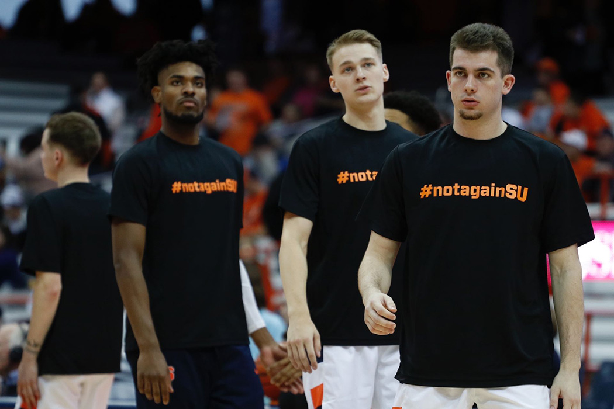

1907: Jack Johnson becomes first Black world heavyweight champion
(Add info on banning viewing of fight- Jim Jefferies 'Great White Hope')
1947: Jackie Robinson breaks the color barrier in the MLB
Brooklyn Dodgers
1967: Muhammed Ali refuses to be drafted to the military,
citing his religious beliefs - conscientious objector
(stripped of belt)
1967: Kathrine Switzer becomes first woman to complete the Boston Marathon
1968: Tommie Smith and John Carlos, raised a black-gloved fist during the US National Anthem
immediately forced to leave olympic village
1970: Syracuse 8 Boycott Spring Football Practice
1973: Billie Jean King defeats Bobby Riggs in the 'Battle of the Sexes'
1992: Arthur Ashe publicly announces he has HIV/AIDS
goes on to write the first sports history textbooks, add tennis records
JORDAN ERA
"Republicans buy sneakers too." Senate Race in North Carolina - Harvey Gantt
2014: LeBron James wears an ‘I Can’t Breathe Shirt’ in memory of Eric Garner
2016: Colin Kaepernick begins protesting police brutality by kneeling during the National Anthem
Blackballed by NFL
San Francisco 49ers QB, Colin Kaepernick, in 2016 began kneeling during the national anthem before games in protest against police brutality. He was blackballed by the NFL, like The Syracuse 8, and has been signed, worked out, or seriously considered by NFL team since.
“I think if you’re an athlete, it’s more incumbent on you to speak out” - Greg Allen
The Importance of Athletic Protest

Elizabeth Billman | Senior Staff Photographer
Daily Orange:
Players showed support on social media, SU’s men’s basketball players wore #NotAgainSU warmup shirts and some football players participated in the Barnes Center sit-in. Football players who stayed silent during the Theta Tau incident in 2018 couldn’t stay on the sidelines any longer.
It’s an idea that Syracuse 8 members approve of. History repeats itself, and the Syracuse 8 believe people, specifically athletes, can learn from their boycott. Can learn from the actions of Schwartzwalder, who called players racial slurs, directed medical malpractice, favored less-skilled white players on the depth chart and pitted players against each other based on the color of their skin.
Why athletes cannot "Shut up and Dribble"?
The Syracuse 8 on Michael Jordan:
"Michael Jordan avoided commenting on social issues during his playing career to build his brand, as an example of a lull in high-profile athlete activism (see list above).
Jordan “didn’t have to fight” to play at North Carolina because the Syracuse 8 and other movements won equal rights to play"
- Dana Harrrell, Syracuse 8
"Those young ball players that are on the team now, and the Black athletes at Syracuse University in general, they don't know about the Syracuse 8. And they need to know. Everybody in the university, including white people and other people of color, need to (know the history)."